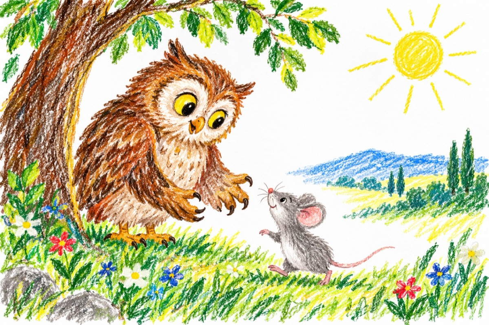

Șoricelul mincinos
Cucuveaua s-a trezit
Și-are capul buimăcit
Strigă-ntr-una, strigă el
Dintre gheare-un șoricel.
Doamnă buhă, draga mea!
Cucuveauă, știi ceva?!
Eu te rog nu mă mânca,
N-am nimic în schimb a-ți da!
Că nu-mi pare rău de mine,
Îmi este milă de tine!
Și nu vreau să-ți vin de hac,
Eu, am înghițit un ac.
Ce-i la mine în stomac!
Când l-am mestecat în grabă
Dintr-o bucată de slană!
Buha s-a înduplecat
Și din gheare l-a lăsat
Crezând că-i adevărat!
Și s-a dus de s-a culcat!
Dar după cele știute -
Minciun-are picioare scurte,
Și cum a pus primul pas,
S-a trezit că-i nas în nas,
La un motănel, sub gheară
Dornic să mănânce slană.
Chiț, nu a avut folos -
Fiinc-a fost un mincinos!
Vasile Groza